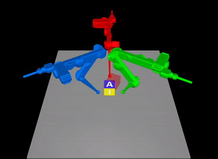
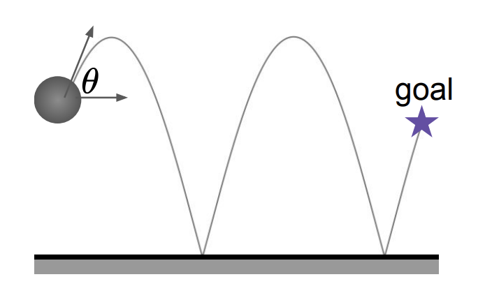
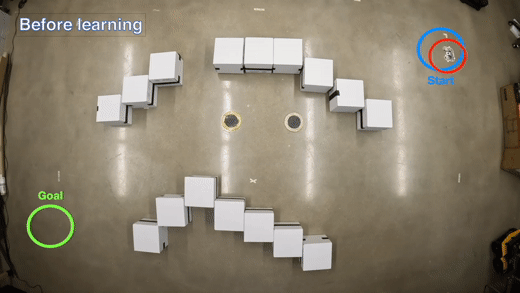
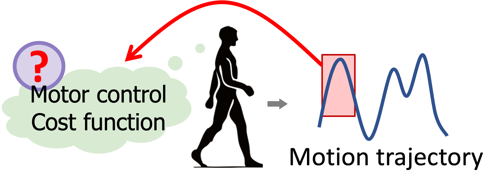
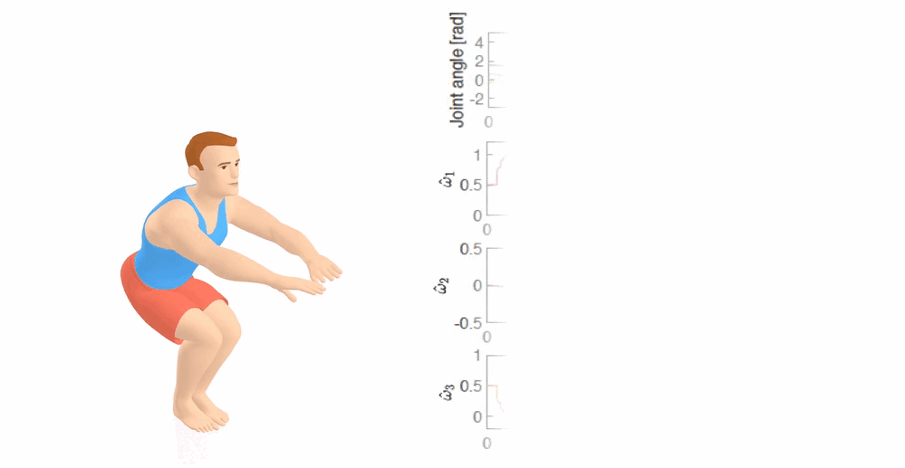
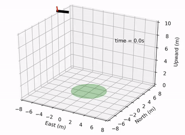
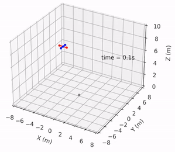
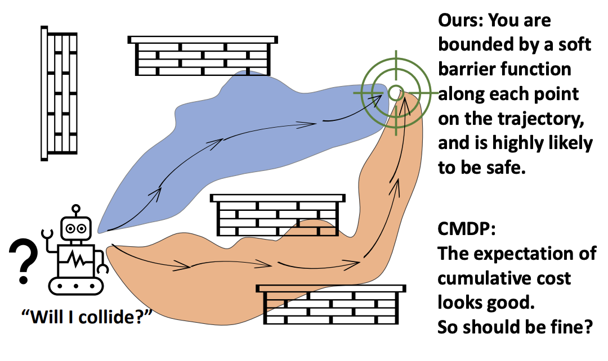

Wanxin Jin (靳万鑫)
I am an Assistant Professor in the Ira A. Fulton Schools of Engineering at Arizona State University. I lead the Intelligent Robotics and Interactive Systems (IRIS) Lab. I teach robotics courses at ASU.
From July 2021 to July 2023, I was a Postdoctoral Researcher in the GRASP Lab, University of Pennsylvania, working with Dr. Michael Posa. I obtained my Ph.D. from Purdue University in 2021, working with Dr. Shaoshuai Mou. I was a research assistant at Technical University of Munich in 2016 and 2017, working with Dr. Sandra Hirche.
My Research
The research of our Intelligent Robotics and Interactive Systems (IRIS) Lab is focused on
-
Human-robot alignment: We develop innovative methods that enable robots to seamlessly understand and communicate with humans through various physical interactions. Our work includes developing adaptive learning algorithms and intuitive control interfaces to enhance representation alignment between humans and robots.
-
Contact-rich manipulation: We develop advanced physics-based representations and frameworks that enable robots to interact with and manipulate physical objects efficiently and precisely. Our goal is to enhance robots’ capabilities in performing complex tasks, such as assembly and sorting, in unstructured environments.
-
Fundamental methods for robot autonomy: We develop fundamental theories/algorithms for efficient, safe, and robust robot intelligence, by harnessing the complementary benefits of model-based (control/optimization) and data-driven (machine learning & AI) approaches.
Highlighted Research and Publications
1. Multi-contact manipulation

Task-Driven Hybrid Model Reduction for Dexterous Manipulation
Wanxin Jin and Michael Posa
IEEE Transactions on Robotics (T-RO), 2024
[PDF]/
[Code]/
[Video]/
[Webpage]

Adaptive Contact-Implicit Model Predictive Control with Online Residual Learning
Wei-Cheng Huang, Alp Aydinoglu, Wanxin Jin, Michael Posa
IEEE International Conference on Robotics and Automation (ICRA), 2024
[PDF]/
[Code]/
[Video]/
[Webpage]
 Learning Linear Complementarity Systems
Learning Linear Complementarity Systems
Wanxin Jin, Alp Aydinoglu, Mathew Halm, and Michael Posa
Learning for Dynamics and Control (L4DC), 2022
[PDF] /
[Code]

Adaptive Barrier Smoothing for First-Order Policy Gradient with Contact Dynamics
Shenao Zhang, Wanxin Jin, Zhaoran Wang
International Conference on Machine Learning (ICML), 2023
[PDF]
2. Human-robot alignment
 Safe MPC Alignment with Human Directional Feedback
Safe MPC Alignment with Human Directional Feedback
Zhixian Xie, Wenlong Zhang, Yi Ren, Zhaoran Wang, George. J. Pappas, and Wanxin Jin
Submitted to IEEE Transactions on Robotics (T-RO), 2024
[PDF] /
[Code] /
[Videos]/
[Webpage]
 Learning from Human Directional Corrections
Learning from Human Directional Corrections
Wanxin Jin, Todd D Murphey, and Shaoshuai Mou
IEEE Transactions on Robotics (T-RO), 2022
[PDF] /
[Code] /
[Videos]

Learning from Sparse Demonstrations
Wanxin Jin, Todd D Murphey, Dana Kulic, Neta Ezer, and Shaoshuai Mou
IEEE Transactions on Robotics (T-RO), 2022
[PDF]/
[Code] /
[Videos]

Inverse Optimal Control from Incomplete Trajectory Observations
Wanxin Jin, Dana Kulic, Shaoshuai Mou, and Sandra Hirche
International Journal of Robotics Research (IJRR), 40:848–865,
2021
[PDF] /
[Code]

Inverse Optimal Control for Multiphase cost functions
Wanxin Jin, Dana Kulic, Jonathan Lin, Shaoshuai Mou, and Sandra Hirche
IEEE Transactions on Robotics (T-RO), 35(6):1387–1398,
2019
[PDF] /
[Code]
3. Fundamental Research

Pontryagin Differentiable Programming: An End-to-End Learning and Control Framework
Wanxin Jin, Zhaoran Wang, Zhuoran Yang, and Shaoshuai Mou
Advances in Neural Information Processing Systems (NeurIPS), 2020
[PDF] /
[Code] /
[Videos]/
[Webpage]

Safe Pontryagin Differentiable Programming
Wanxin Jin, Shaoshuai Mou, and George J. Pappas
Advances in Neural Information Processing Systems (NeurIPS), 2021
[PDF] /
[Code] /
[Videos]/
[Webpage]
 Robust Safe Learning and Control in Unknown Environments: An Uncertainty-Aware Control Barrier Function Approach
Robust Safe Learning and Control in Unknown Environments: An Uncertainty-Aware Control Barrier Function Approach
Jiacheng Li, Qingchen Liu, Wanxin Jin, Jiahu Qin, and Sandra Hirche
IEEE Robotics and Automation Letters (RA-L), 2023
[PDF] /
[Videos]

Enforcing Hard Constraints with Soft Barriers: Safe-driven Reinforcement Learning in Unknown Stochastic Environments
Yixuan Wang, Simon Sinong Zhan, Ruochen Jiao, Zhilu Wang, Wanxin Jin, Zhuoran Yang, Zhaoran Wang, Chao Huang, Qi Zhu
International Conference on Machine Learning (ICML), 2023
[PDF]